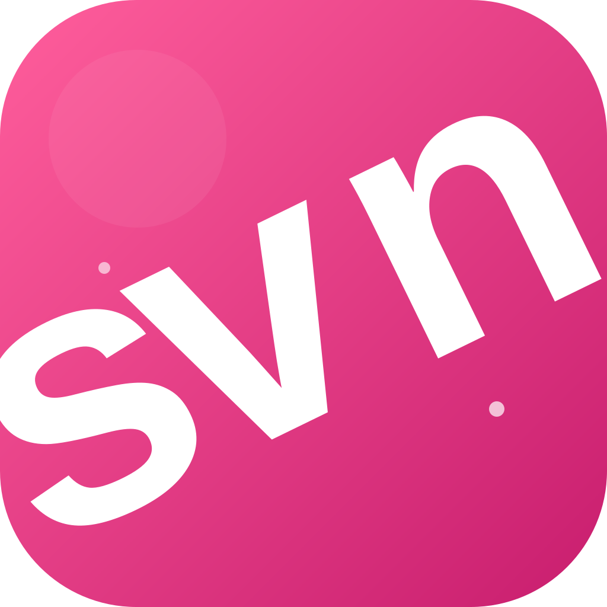
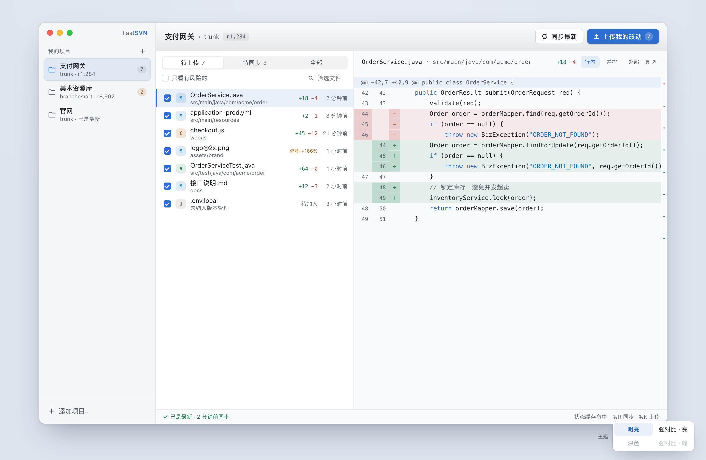

svn

Fast
SVN
The modern Subversion client
开源 · 免费 · 为 macOS 而生
终于，一个
不像 2005 年
的
SVN
客户端。
真正的本机 svn 引擎，现代界面，检出带实时进度与速度。
提交、更新、冲突处理、远程浏览——一目了然。
100% 开源
代码公开可审计，拒绝黑盒
永久免费
无订阅、无广告、无功能墙
macOS 原生体验
原生外壳 + 亮/暗双主题，为 Mac 精心打磨
支付网关 — FastSVN
